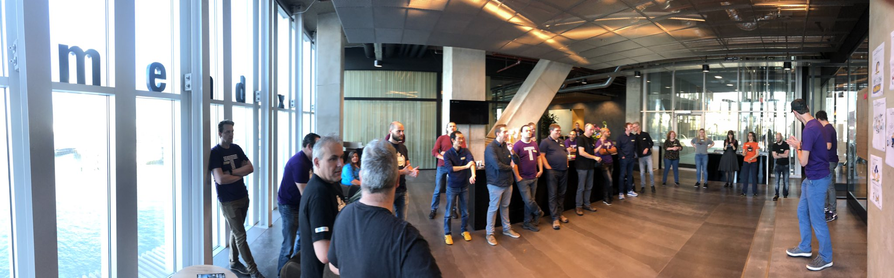

Event format

FroGs conf is organized as an unconference, a conference format that follows the Open Space Technology. The idea of an unconference is to learn from and share with each other. It’s a way to build a conference around those meaningful interactions you have during the breaks at a normal conference.
In this format, attendees are also session contributors. Anyone who wants to initiate a topic can claim a time slot in the conference schedule. Once you are at the conference, the organizers' job is mostly over. They have provided a space and the tools for the event. After this, it’s up to you as a participant to make it a great event.
At the beginning of the conference, we will go over the open space principles and rules to make sure everybody knows how the conference is run.
We expect to use Welo and Miro as our main conference tools. We use Slack for pre-, side- and post conference discussions. You will be invited to our Slack channel before the conference.
Open Space conferences
There are some simple rules for participants:
-
Whoever comes is the right people
As a facilitator, you should welcome anyone who has decided to join your session, and not be frustrated if you expected different people.
As a participant, you should be ready to collaborate with anyone. -
Whenever it starts is the right time
As a facilitator, if you need some time to prepare, take it. This might lead to people getting bored and go join another session. The best is to prepare in advance.
As a participant, there is nothing wrong with joining a session in progress. But respect the people who have already started, and try to jump in quietly. -
Wherever it is, is the right place
You will be offered several spaces for your session. Choose the one that fits your needs as a facilitator or as a participant. -
Whatever happens is the only thing that could have
Be prepared to be surprised. Don’t be annoyed if you get feedback. Don’t be disappointed if it doesn’t work. Try again if need be. -
When it’s over, it’s over
As a facilitator, it’s up to you to mind your timebox. The organizers will not do it for you. Keep in mind that the participants of your session might want to go to another session after yours, and that the room might be reserved after. Feel free to continue in a different location with anyone who is interested.
Law of two feet
If, during the course of the event, any person finds themselves in a session where they are neither learning nor contributing, they have the responsibility to themselves to stand up and go to some more interesting place.
Tell me more about how to prepare
If you want to know more about how to prepare for an unconference, you can read about that here.
Possible session topics
Since it’s called “Friends of Good Software conference” we do expect topics to be related to the fields of sotware and quality:
- test approach and strategy
- oracles and heuristics
- testability
- documentation
- note taking
- quality and agile, scrum, waterfall, XP, ...
- automation in building, testing, deploying, ...
- tools
- risk analysis
- storytelling
- modelling & visualisation
- user story refinement
- communication skills
- collaboration skills
- problems you need help with
- how to hire new people
- ...
Be creative! Create your own session with the stuff you want to talk about, learn more about or let others help you solve a problem.